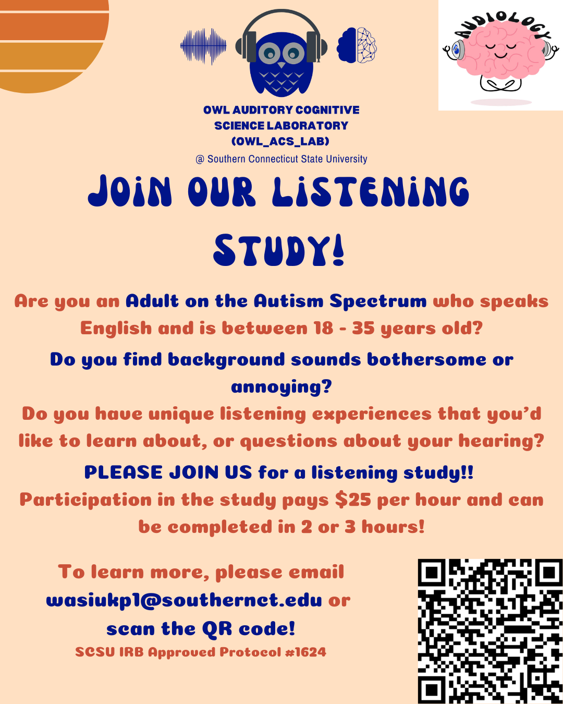

Interested in participating?
Our current recruitment focuses on autistic adults ages 18–35 who are interested in helping us learn more about hearing, auditory processing, cognition, and everyday listening experiences in individuals on the autism spectrum.
Please feel free to contact us if you're interested in participating or learning more about our work.
Submitting this form lets the Owl Auditory-Cognitive Science Lab team know that you are interested in learning more. A member of our research team will contact you with additional information and answer any questions you may have.
Prefer to email us?
You can contact the research team directly at wasiukp1@southernct.edu.
Current study
This recruitment is associated with SCSU IRB Approved Protocol #1624. A member of the research team will provide additional information before participation.
Questions beyond participation?
Scientific collaborators, clinicians, students, and community partners are also welcome to contact the lab.
Owl Auditory-Cognitive Science Lab
Department of Speech, Language, Hearing Sciences
Southern Connecticut State University
SCSU Health and Human Services Building
493 Fitch St, New Haven, CT 06514
